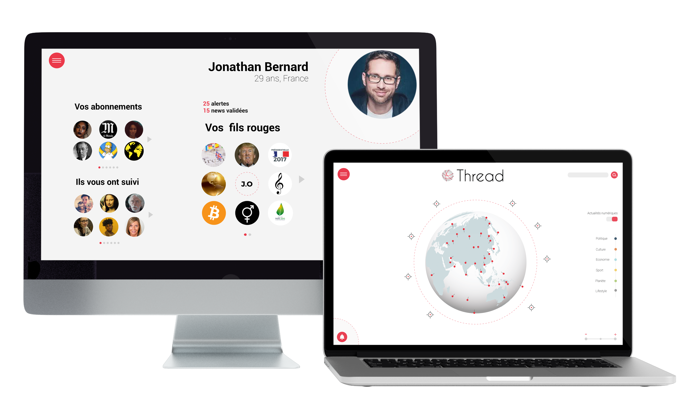

Thread est un projet de réflexion autour de la notion de média, ciblé autour de trois mots clés : interaction, hybridation et contenu. A travers un travail de recherche et d'analyse, nous avons dû penser un nouveau moyen de diffuser l'information, au croisement entre une agence de presse et un réseau social.
Trois principes sont au coeur du projet : une approche globale de l'information, la hiérarchisation de l'actualité, offrir à l'utilisateur la possibilité d'être à la fois acteur et récepteur dans la création de l'information.
Constitution d'un dossier documentaire, rédaction d'un article de recherche (10 pages)
Création des interfaces et du logo, participation à l'élaboration de la charte graphique.